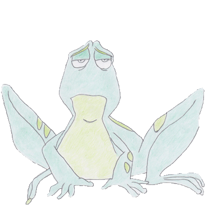

Que faire pour résoudre le problème?
Conseils pratiques
Le cercle vicieux
Souvent, la relation de couple se trouve piégée dans la problématique alcoolique. La consommation excessive d'alcool fait naître de multiples conflits et problèmes au sein du couple. Malheureusement, ces tensions participent au maintien de la consommation en poussant la personne alcoolique à davantage boire pour oublier et fuir la situation devenue progressivement insupportable, au désespoir grandissant de son conjoint...
Sortir du silence, en parler avec mon conjoint
Au début de la problématique alcoolique, le conjoint aura tendance à se voiler la face autant que le buveur lui-même. Ils resteront tout deux enfermés dans le silence et l'aveuglement. C'est généralement suite à l'usure, ou à un épisode tel que de la violence familiale ou un accident que ce silence se lèvera.
Pistes de solutions : Si vous sentez que quelque chose ne va pas, que vous remarquez que votre conjoint commence à boire de plus en plus, qu'il rentre souvent ivre à la maison ou tout autre élément vous faisant avoir des doutes quant à sa consommation d'alcool, il vous est conseillé, dans un premier temps, de lui en parler posément quand il est sobre. Cela pourra vous permettre de briser la glace et de lui montrer que vous vous souciez de la situation. Vous pouvez aussi chercher une aide extérieure afin de pouvoir discuter de la situation avec des professionnels ou des personnes vivant la même chose que vous.
L'importance d'avoir un sentiment de satisfaction dans mon couple

De nombreuses recherches montrent une association négative entre la satisfaction dans la relation et la consommation d'alcool présente dans le couple. Autrement dit, les couples dans lesquels il y a un membre alcoolique s'estiment, le plus souvent, moins heureux et satisfaits que les couples n'ayant pas ce problème. Cette insatisfaction au sein du couple participe fortement au maintien de la problématique alcoolique.
Pistes de solutions : Comment savoir si mon niveau de satisfaction est élevé ? Vous pouvez faire le test "DAS" pour avoir des balises sur votre niveau de satisfaction. Celui-ci peut vous aider à prendre conscience de ce qui va bien dans votre couple et ce qui pourrait être amélioré. Ensuite, il peut être bénéfique pour vous d'envisager et de commencer une thérapie de couple pour résoudre les problèmes en allant au-delà de la problématique de l'alcool. En effet, les études suggèrent que votre engagement auprès de votre conjoint dans son traitement est un bon prédicteur d'une diminution de sa consommation d'alcool.
Mon estime de moi et celle de mon conjoint réduites progressivement par la boisson
Mon conjoint : Les individus alcooliques ont en moyenne une estime d'eux-mêmes plus faible que celle d'individus n'ayant pas de problème d'alcool. Ils se sous-estiment souvent et développent un fort sentiment de honte ...
Moi : Vivre avec un conjoint alcoolique a un impact sur l'estime de soi. Celle-ci se voit diminuer face à une exposition répétée à d'éventuelles violences verbales (humiliations, insultes,...) et physiques. Les études prouvent que les violences verbales répétées faites au conjoint non alcoolique sont le principal prédicteur d'une faible estime de soi. Pour information, une faible estime de soi est en lien avec une faible satisfaction dans le couple.
Pistes de solutions : Tout d'abord, n'oubliez pas de prendre du temps pour vous. C'est crucial pour maintenir un certain équilibre. Vous vivez votre vie et non la sienne: passez du temps avec vos amis, faites des activités extérieures dans des lieux qui vous sont propres et dans lesquels vous vous sentez bien. Vous avez le droit de vous épanouir, malgré le handicap constitué par l'alcoolisme de votre conjoint.
Ensuite, la violence conjugale est aussi un cercle vicieux qui a tendance à s'installer petit à petit. Pour sortir du problème, il faut briser le cercle. Il est donc conseillé de porter plainte et de s'assurer de sa sécurité en partant du domicile. Cela demande souvent beaucoup de forces. Il est important d'être bien entouré pour entreprendre cette démarche. Il existe de nombreux services qui peuvent vous aider là dedans.
Les difficultés de compréhension des émotions de mon conjoint
La personne alcoolique développe facilement des déficits dans la compréhension, l'identification et l'expression verbale de ses émotions et de celles d'autrui. Ces déficits se regroupent et portent le nom d' « alexithymie ». Dans le cadre du couple, la personne dépendante à l'alcool pourrait avoir des difficultés dans la compréhension de ce que ressent son conjoint et de ses intentions. Ainsi qu'une plus grande difficulté à éprouver de l'empathie envers lui. De plus, il aura des difficultés à exprimer ses propres émotions à son conjoint. Tout ceci contribue à une incompréhension mutuelle grandissante entre les deux partenaires. Ils peuvent ne plus se sentir compris l'un par l'autre, ce qui augmente les disputes et/ou le manque d'envie de communiquer. A terme, cette pauvreté communicationnelle des émotions mènerait à une moindre satisfaction dans le couple.
Pistes de solutions : Entreprendre une thérapie de couple pour réinstaurer une communication sensée et une meilleure compréhension mutuelle dans un cadre adapté, avec un thérapeute comme guide. En dehors de ce cadre, tentez d'exprimer explicitement vos ressentis, vos souffrances et vos émotions sans pour autant faire des reproches qui risqueraient de mettre votre partenaire sur un mode défensif et agressif. Pour ce faire, parler en « je » à l'autre est une bonne astuce.
Inconsciemment, quel est mon impact, est-ce que je joue aussi un rôle sans m’en rendre compte ?
Parlons-en : La Codépendance
* Par soucis de facilité, nous utilisons le terme "un partenaire" ou "un compagnon" de manière générale mais celui peut désigner autant un hommme qu'une femme.
Parce que je l’aime, je dois l’aider. Parce que je l’aide, je m’oublie et lui en veux. Ne suis-je pas victime aussi de sa maladie?
Lorsqu’une personne qu’on aime est dans la souffrance, lorsqu’on assiste à son auto-destruction, il est naturel de chercher à l’aider. En effet, la plupart des conjoints d’une personne souffrant d’alcoolisme mettent en place une série de comportements dans le but d’aider, qu’on qualifie souvent d’habilitation.
Qu’est-ce que l’habilitation ?
Peut-être vous reconnaîtrez-vous dans certaines de ces situations.
Avez-vous déjà couvert votre conjoint lorsque sa consommation d’alcool a eu des conséquences négatives ?
Lui* avez-vous parfois donné de l’argent pour qu’il puisse aller boire ?
Vous est-il arrivé de devoir annuler des rencontres avec des amis parce que votre conjoint avait trop bu ?
Peut-être avez-vous déjà appelé la société où travaille votre compagnon pour l’annoncer malade, alors que la raison pour laquelle il ne pouvait se rendre à son travail était un état d’ivresse ou un lendemain difficile ?
Vous disputez-vous parfois avec votre partenaire à propos de la boisson ?
Tentez-vous de cacher de l’alcool afin qu’il ne puisse en boire ?
Mettez-vous parfois une bouteille d’eau à table en évidence avec l’espoir qu’il ne boive pas une bière/un verre de vin à la place ?
Vous est-il arrivé de devoir réparer la voiture à cause d’un accident lié à sa consommation d’alcool ?
Devez-vous parfois mettre votre partenaire au lit parce qu’il a trop bu pour le faire lui/elle-même ?
L’habilitation reprend tous ces comportements qui peuvent, directement comme indirectement, renforcer potentiellement la problématique d’alcoolisme du conjoint. Il est important de se rendre compte que ces comportements sont des réactions normales et naturelles mises en place pour faire face au stress induit par la problématique de l’alcool dans la famille. De manière insidieuse, plus le problème s’aggrave et moins les solutions paraissent simples. On réagit alors plus violemment.
Malgré toute la bonne volonté que vous mettez dans ces situations où vous cherchez à aider, il est important de prendre conscience qu’aucun de ces comportements ne se révèle efficace. Pire, ils vous entraînent dans la problématique alcoolique de l’autre, et les conséquences qui ne devraient l’affecter que lui vous touchent aussi. C’est ce qu’on appelle la co-dépendance. Vous cherchez à l’aider et, en voulant bien faire, peut-être en cherchant à le protéger, vous lui permettez de continuer à consommer, et en retour, vous en souffrez. Ces comportements sont donc dysfonctionnels, et ce pour plusieurs raisons :
Ils vous accablent de responsabilités qui, auparavant, incombaient à l’autre, mais qu’il n’est plus capable de prendre en charge à cause de son alcoolisme.
Comme dit précédemment, et cet aspect est peut-être le plus important, vous l’empêchez de prendre la responsabilité de ses comportements problématiques liés à l’alcool car, en souhaitant l’aider, vous le surprotégez.
Parfois, ces comportements favorisent un déni de la sévérité et de l’importance de l’alcool.
Enfin, l’habilitation vous rend trop impliqué dans l’alcoolisme et ses effets, et vous souffrez d’un problème qui n’est pas le vôtre.
La solution ? Cesser de le/la couvrir. Faire comprendre que vous n’avez pas à souffrir de sa problématique alcoolique, que vous n’avez pas à en assumer les conséquences. C’est à lui/elle de les assumer. Et peut-être que lorsque les conséquences deviendront trop importantes, il/elle se décidera à chercher de l’aide. A ce moment-là, vous pourrez apporter tout votre soutien et l’accompagner dans son traitement. Accepter que vous avez besoin d’aide vous aussi, et tenter de guérir ensemble.
Parlons-en : La Culpabilité
S’il est une chose à retenir de toute ces explications sur le co-alcoolisme, c’est ceci : vous n’êtes pas coupable de sa maladie. En aucun cas. Le croire, c’est vous détruire à petit feu. Vous n’avez pas décidé à sa place de boire, et votre partenaire n’a pas le droit de vous culpabiliser. S’il choisit de remettre le problème sur vos épaules, c'est certainement afin de se sentir moins coupable. N’y croyez pas.
En outre, bien qu’il soit peut-être difficile de le comprendre, il faut que vous sachiez qu’il n’y a rien que vous puissiez faire pour qu'il reconnaisse son problème s’il a décidé de le nier. La seule chose qui puisse aider est d'éviter de le couvrir afin que les conséquences de sa consommation le touchent, voire, dans le meilleur des cas, ne touchent que lui. Encore une fois, vous n’avez pas à souffrir à sa place, ni même avec lui. Si vous avez décidé de sortir voir des amis et qu’il ne peut pas vous accompagner parce qu’il a trop bu, partez vous amuser sans lui et expliquez calmement le problème à vos amis; il y a de fortes chances qu’ils comprennent, peut-être même en sont-ils déjà conscients.